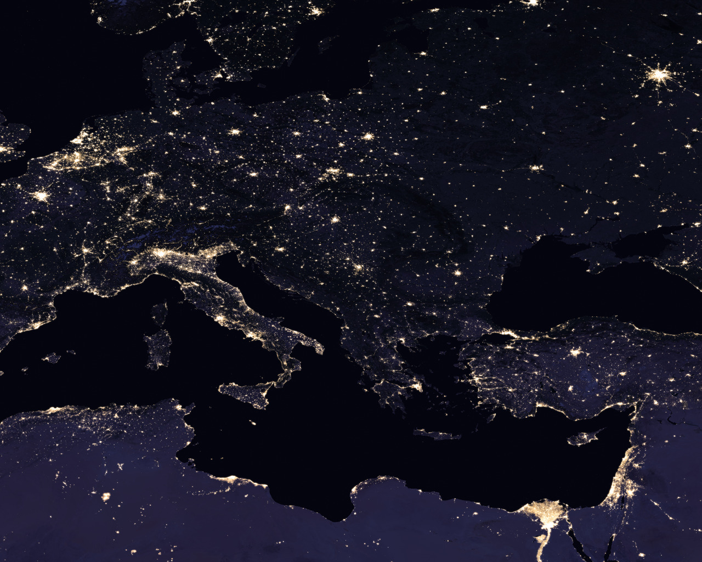

Crédits et sources Données, rendu et droits Imagerie satellite : Esri, Maxar, Earthstar Geographics, GIS User Community — World Imagery et attributions . Fond mondial : Natural Earth II (domaine public), distribué avec Cesium.
Relief : Tilezen/Mapzen Terrarium — AWS Open Data (SRTM, GMTED2010, ETOPO1). Attributions des données d’altitude .
Rendu : CesiumJS 1.145.0 , licence Apache 2.0 . Les attributions dynamiques sont conservées en bas de l’écran.
Textures du système solaire : Solar System Scope , CC BY 4.0 , établies d’après des données NASA, fichiers inchangés. Soleil, Mercure, Vénus (atmosphère), Lune, Mars, Jupiter, Saturne et anneaux, Uranus, Neptune ; fond étoilé fourni mais non utilisé. Crédits et liste des fichiers . Tailles et distances artistiques, pas une simulation à l’échelle. Module de 4I•MINE, rendu CesiumJS ; Terre : Natural Earth II.
Photographies : fichiers inchangés, affichage recadré par CSS ; chaque photo conserve sa licence, son auteur et sa source. Crédits complets · Manifeste . Pour la photo Jérusalem 2 : texte intégral GFDL 1.2 . Aucun texte sur Fatiha ni fait historique modifié. Aucune image des références non licenciées.
Images NASA en haute définition Photo orbitale de l’Italie et des Alpes : NASA / Scott Kelly, ISS Expedition 46, ISS046-E-24329 — domaine public américain. Variantes jusqu’à 4928 × 3280 pixels, recadrage d’affichage. Source NASA . Cette photographie d’ambiance n’est pas une vue des lieux du parcours.

Black Marble 2016 : NASA’s Goddard Space Flight Center ; Joshua Stevens (SSAI), traitement ; Miguel Román (NASA/GSFC), scientifique ; données VIIRS/Suomi NPP. Domaine public américain. Tuile C1 native 21600 × 21600 ; extrait Europe/Méditerranée 4800 × 3840 après décodage demi-résolution, fourni jusqu’à 3840 × 3072. Composite archivé, pas une vue en temps réel. Source et crédits NASA · Détail des droits et résolutions . Aucune approbation de la NASA n’est suggérée.
Introduction cinématique Vol virtuel vers la place de Zocodover à Tolède, puis transition artistique vers une vidéo d’ambiance. La rue filmée n’est pas présentée comme Tolède : localisation non établie ici. Éclairage simulé à midi, pas une vue en direct.
Vidéo « Aerial View of Historic Cobblestone Street » : Altaf Shah / Pexels , licence Pexels . Extrait recoupé à 6,5 s, réencodé en 1280 × 720, son original retiré ; recadrage d’affichage.
Voix off de synthèse Microsoft Edge TTS, fr-FR-HenriNeural, outil edge-tts, débit −8 %, hauteur −6 Hz. Texte exact : « Commençons par le début. » puis « Il est midi. » Cette seconde phrase décrit la mise en scène à midi simulé, pas l’heure réelle ni un souvenir. Ce n’est pas la voix de Fatiha ni l’imitation d’une personne réelle.
Battements de cœur, souffle et vent : sons synthétisés par Web Audio, oscillateurs et bruit filtré ; aucun enregistrement personnel. Nuages et flou procéduraux. Globe : CesiumJS, Natural Earth II et imagerie Esri, crédits ci-dessus. Crédits complets de l’intro .
Les vingt photographies